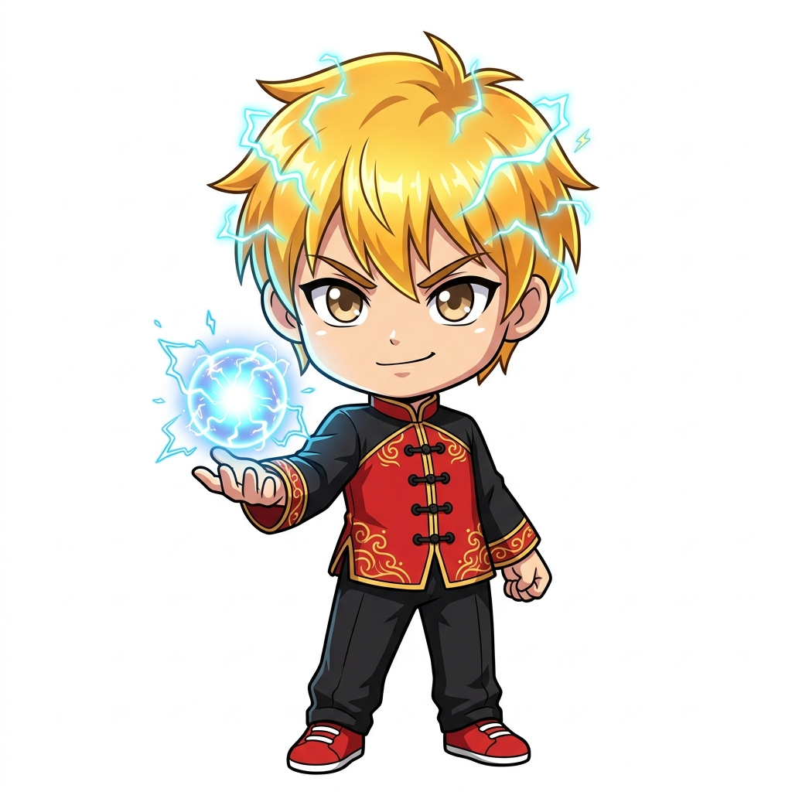
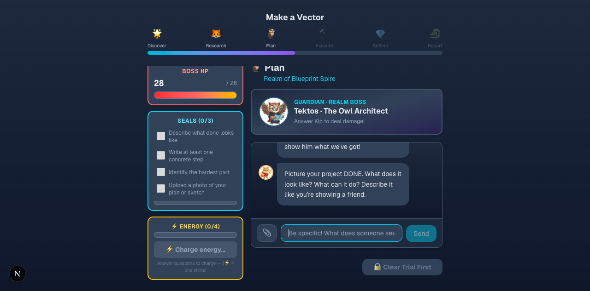
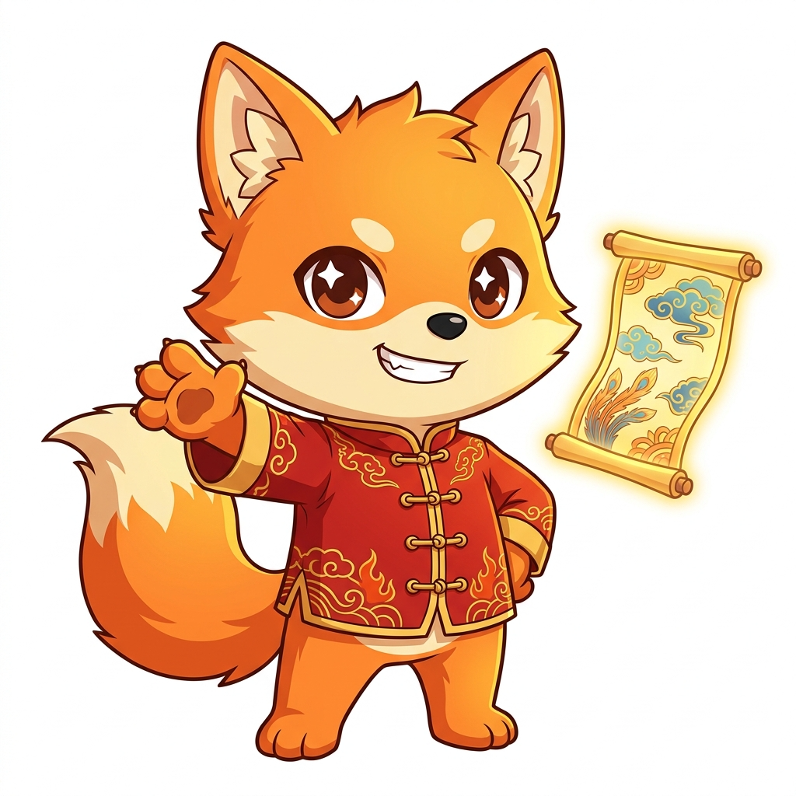
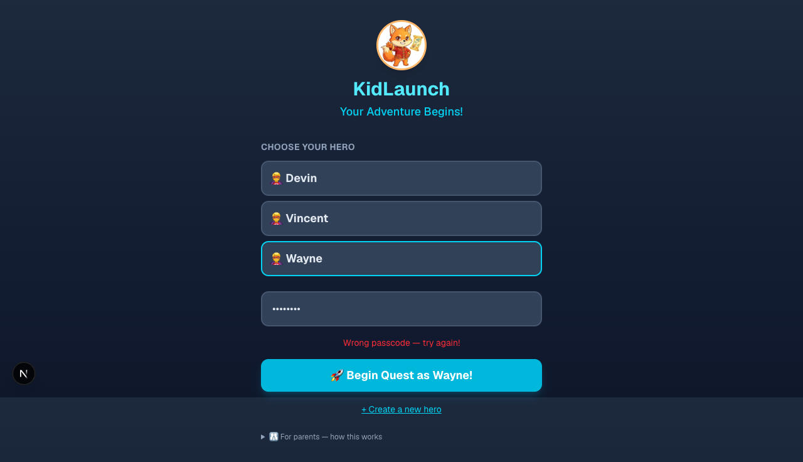
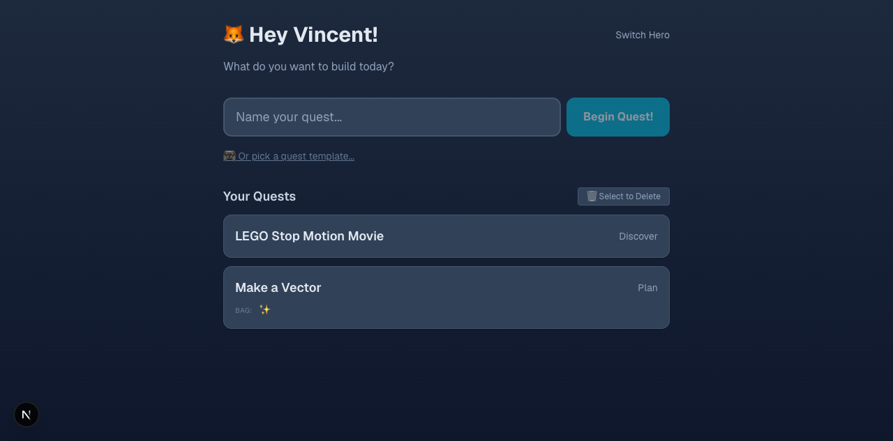
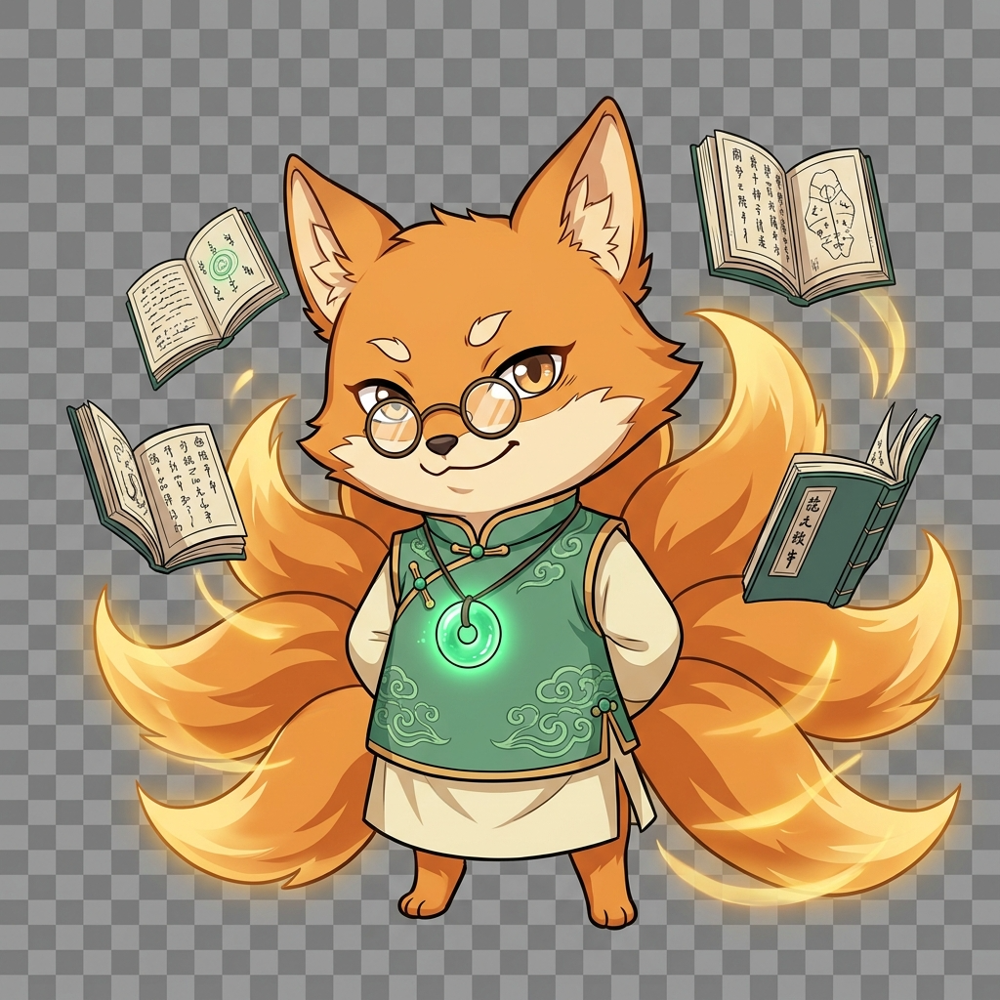
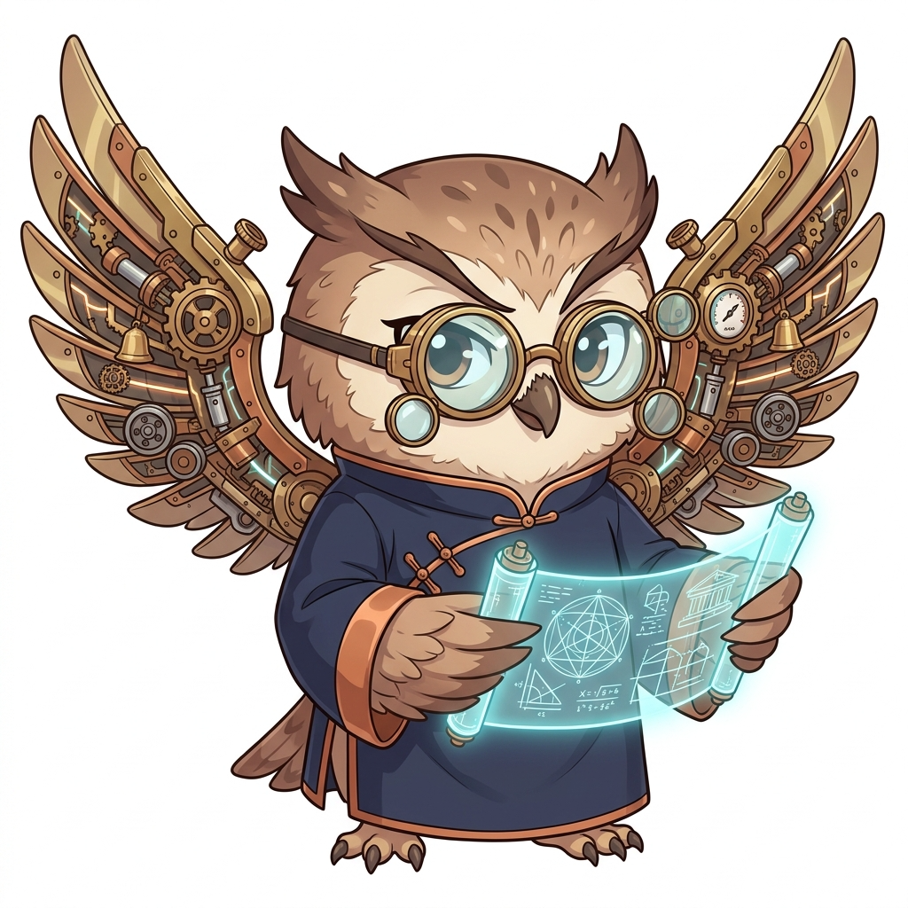
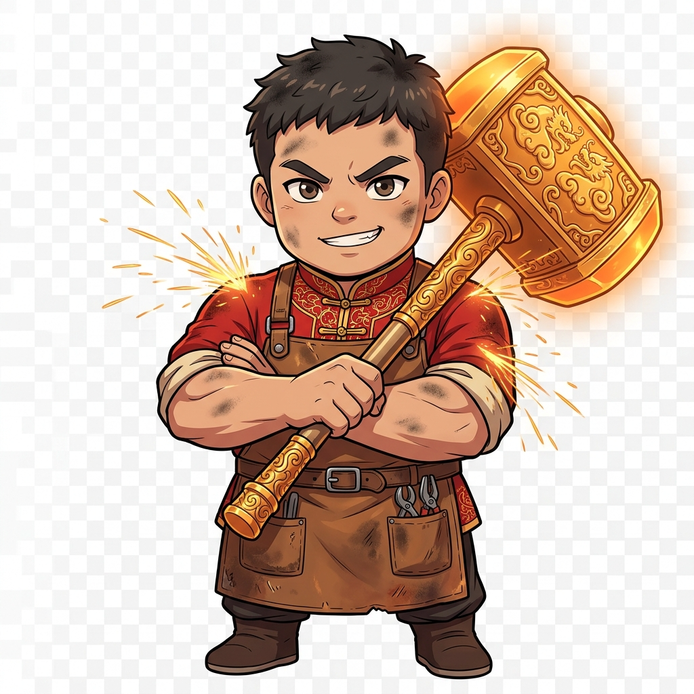
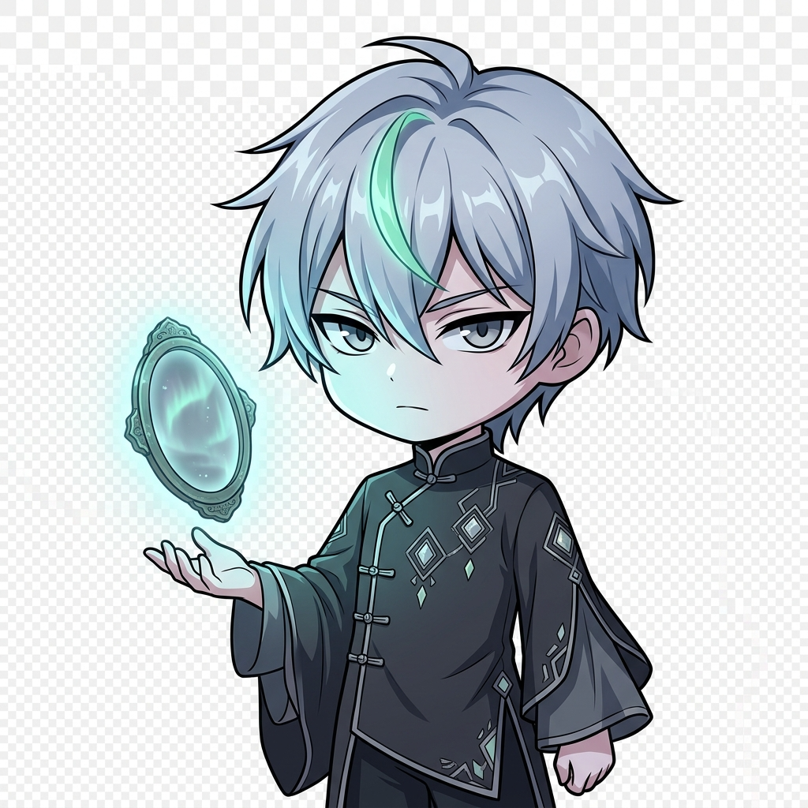
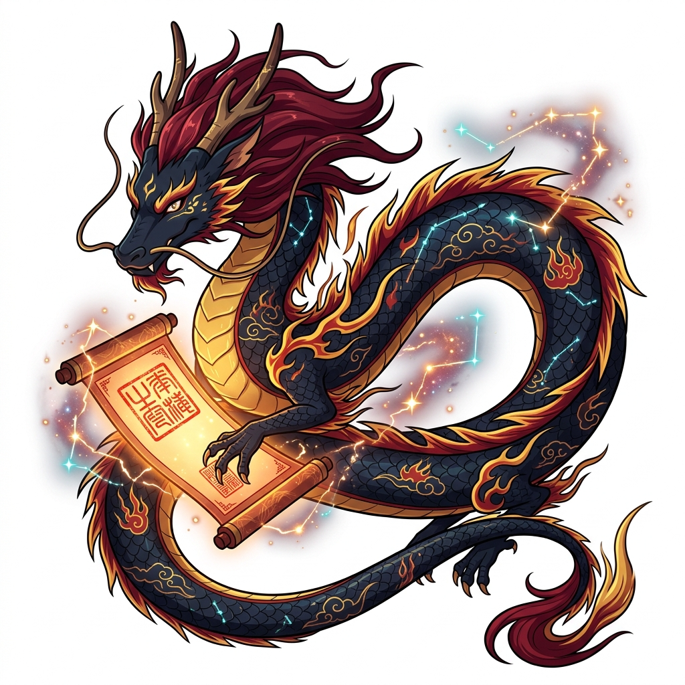

Instead of playing games
all summer, he built one.
Wayne is 12. This summer, instead of Roblox, he co-built KidLaunch — an RPG adventure where kids complete real-world projects by battling bosses, collecting seals, and earning guardian allies.

🌟 The Game Itself
The Plan phase — boss HP bar, seals, energy, guardian Tektos, and AI coach Kip
"What if instead of playing games, you built one?"

Summer 2026. Wayne is 12. While other kids are deep into Roblox and Minecraft, his dad asks him a question that changes everything.
The answer became KidLaunch — a web app that turns project-based learning into an RPG adventure. Each real-world project has 6 phases: 🌟 Discover → 🦊 Research → 🦉 Plan → 🔨 Execute → 💎 Reflect → 🐉 Report. Each phase has a guardian boss. Pass the gate, defeat the boss, move on.
It started on June 29, 2026 with a blank Next.js canvas — literally the default create-next-app template. Six weeks later, it's at v0.7.0 with 40 commits, 17 regression tests, 6 guardian bosses with death animations, and a production deployment on a real server.
But the code isn't the real story. Wayne is.

The login screen — Kip the fox welcomes adventurers

The quest dashboard — "What do you want to build today?"

🧭 Wayne's JourneyFrom "this is boring" to architecture proposals
Wayne tested KidLaunch 15+ rounds across 10 versions in one month.
saveAnswersForPhase() only ran on gate pass — six weeks of answers silently discarded. A 12-year-old found a data-loss bug the adults missed.

🦉 His FingerprintsWhat Wayne actually contributed
Every major system in KidLaunch has Wayne's design thinking behind it. Here's what a 12-year-old tester actually built.
Boss HP Bar
Visible during chat, not just at gate time. He demanded real-time feedback: "Show damage per message."
Death Animations
MP4 per boss. He discovered the dual-video pitfall where the avatar animation finished before the overlay rendered.
Energy System
Charge per answer, attack anytime. He tuned max energy to 4: "5 takes too long to charge."
Boss Auto-Pass
"Seals should be bonuses, not blockers." Found it was broken in Research specifically — phase-specific bug hunting.
AI Quality Gate
Proposed good explanations earn bonus points. Then discovered the "bread bug" — off-topic answers passing the gate.
Back Navigation
Three vectors eliminated: phase bar buttons, in-app back, and My Quests link. Found every escape hatch.
Mobile Strategy
His call: block phones (too cramped), allow tablets. Product decision, not a bug report.
Phase Reordering
3 rounds of asking to swap Research↔Plan. He was right — Research before Plan makes more sense for kids.

📊 By The NumbersOne summer. One kid. One product.

🏆 His Finest MomentThe 0% Score Crisis
For three consecutive rounds — August 4, 5, and 6 — Wayne reported that his project scores were always zero.
We dismissed it: "He's testing with empty projects." "He didn't actually complete anything." "The scoring formula says it should work."
Wayne didn't give up. He created an "ExecTest" project, played through to the Report phase, and sent a screenshot as evidence. The database confirmed: zero phase_answers were saved.
saveAnswersForPhase() only ran when a gate was passed. Every normal Q&A answer — across six weeks of testing — was silently discarded. The save pipeline had been broken since day one, and a 12-year-old was the one who proved it.
His score that round: 8.5/10 — the highest ever awarded. He was right the whole time.
🦊 Click to play — Kip's death animation. Wayne discovered the dual-video bug that made this flicker.

Build your own project.
KidLaunch guides kids through real projects — from idea to report — with AI coaches, boss battles, and guardian allies.
🐉 Click to play — The final boss falls. Your project is complete.